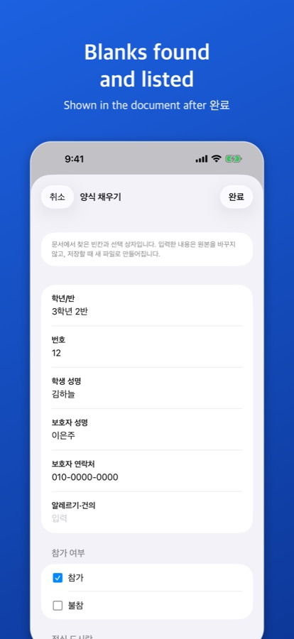
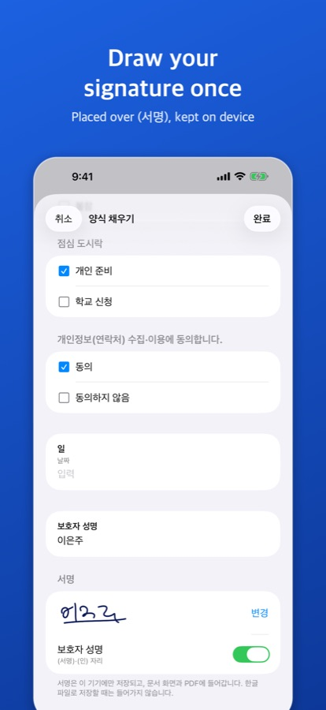
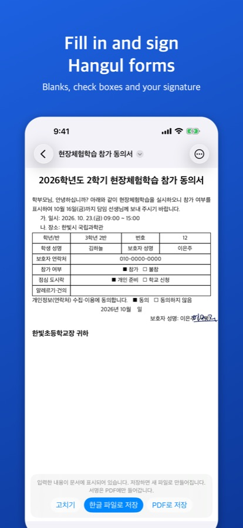

Fill in and sign a school reply form
What this is for
Korean schools often send notices (가정통신문) with a reply slip or consent form as a Hangul file: blanks for names and phone numbers, □ check boxes and a line such as “보호자 성명: ______ (서명)” (parent's name and signature). You can complete and return it from your phone without printing.
Get HWP Viewer on the App Store
Saving a filled form as a PDF without a signature is free. Form saves (Hangul files, signed PDFs or page images) are free three times; after that, a one-time lifetime unlock is needed (4,400 won on the Korean App Store as of October 2026; not a subscription). The same unlock covers PDF/photo conversion.
The app's interface is in Korean; the Korean menu names are given below in quotes.
1. Fill in the blanks
- Open the reply form from KakaoTalk or Mail with the share button → “HWP 뷰어”.
- Tap “더 보기” (…) → “양식 채우기” (fill in form).
- The app lists the blanks it found (class, student name, guardian's phone…), the □ check boxes, choices such as “참가( ) 불참( )” (attend / not attend) and date blanks. Type and tick.

2. Add your signature
When the form has a “(서명)” or “(인)” mark or a signature cell, a “서명” (signature) section appears below the list.
- Tap “서명 그리기”, sign with your finger and tap “완료”.
- Turn on the switch next to the place it should go (for example 보호자 성명).
- The signature is kept on this device only (from 1.2.0, on this device and in your own iCloud, so your iPad on the same Apple ID has it too) and is ready for the next form. “변경” redraws it and “서명 삭제” deletes it.

3. Check and send as PDF
- Tap “완료”: what you entered and the signature show in the document. “고치기” goes back to edit.
- Tap “PDF로 저장”: a new PDF is made and the original stays as it was.
- Send it with KakaoTalk or Mail from the share sheet, or save it to Files.

If the school wants a Hangul file
For HWPX documents, “한글 파일로 저장” saves a new HWPX file marked “(작성)”. The signature goes into PDFs and page images only, not into saved Hangul files. From 1.4.0, HWP (.hwp) forms can be saved the same way as a new .hwp file to send back. An .hwp that can’t be saved as a Hangul file (password-protected, distribution-only and so on) is saved as PDF.
Practice form
An invented school consent form with a signature line: form-sample-sign.hwpx
Good to know
Does it find every blank?
Only the blanks the app finds are listed; some may be missed, and parenthesis choices are looked for only in documents that look like forms.
Can I add a stamp (도장)?
No, stamp images cannot be added. A drawn signature can go on a “(인)” mark.
Where do my entries go?
Everything is processed on the device; nothing is sent to a server.
iPad and Mac?
The same steps work on iPad. The current Mac version does not have form filling or signing yet.